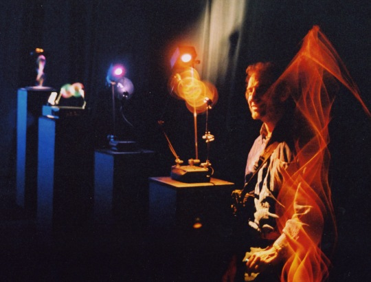

� Kinetic light sculptor first trained as a physicist
� Born in Manchester 1951, raised
in Cambridge on a diet of relativity, cosmology and contemporary art.
My father, F G Friedlander FRS, was a reader at the Department of Applied Mathematics and Theoretical Physics which was also home to Stephen Hawking. My mother, Yolande was a locally known artist, painter and ceramicist.
· One time aspiring cosmologist and interstellar propulsion expert. Metamorphosed to stage lighting designer, scientific artist and light sculptor.
� 1972 BSc in physics from Sussex University, my personal tutor, Sir Anthony Leggett, subsequently received the Nobel Prize for work on superfluidity.
· 1976 BA in Fine Art from Exeter College of Art.
Selected Career Highlight:
� 1995 A prize winner at the prestigious ARTEC, Japans leading hitech art show.
� 1998 LIGHTFORMS '98 winner New York. Received the USHIO America Award for Innovation.
� 2003 Kinetic Art Organisation Prize Winner.
� 2004 Kinetic Art Organisation Prize Winner.
·2006 Timeless Universe : Valencia, Spain, art science installation based on Julian Barbour's cosmology.
· 2008 Souls and Machines, Reina Sofia Museum, Madrid, Spain.
· 2010 Permanent commissions open in 3 locations: Anchorage Museum, Alaska; Chicago Museum of Science and Industry; Copernicus Centre, Warsaw, Poland.
· 2011 Persistence of Vision: Art Futura XXI, Bilbao, Spain.
· 2012 Spinning Cosmos: Art Futura 2012, MUMI, Montevideo, Uruguay
· 2013 An Alternative Approach: Tallinn Light Biennale, Estonia
· 2014 Wave Garden, Lumina Light Festival, Cascais, Portugal
· 2015 Interplay, Singapore Science Centre
· 2017 Spinning Cosmos with Digital Creatures: Art Futura Roma, Italy
· 2018 Part of the BEEP Electronic Art Collection shown at Ars Electronica, Linz
· Exhibited on four continents and more than twenty countries.